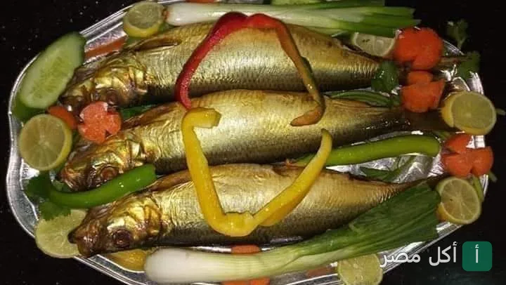

فسيخ سوبر
170 جنيه
اختار طلبك من المنيو وكلمنا على 01114142887.

الأسعار بالجنيه المصري من صفحة أكل مصر (آخر تحديث معلن: ١٧ أكتوبر ٢٠٢٦). أكد السعر مع المطعم عند الطلب.
الأصناف والأسعار من صفحة أكل مصر المنشورة. أكد تفاصيل طلبك والسعر مع المطعم عند الاتصال.